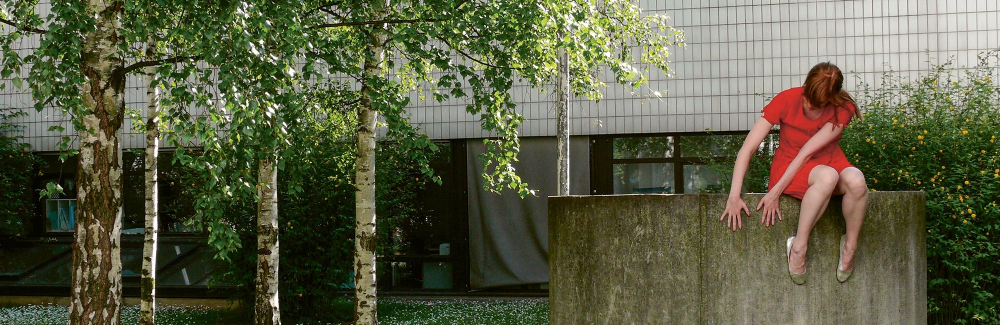
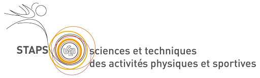
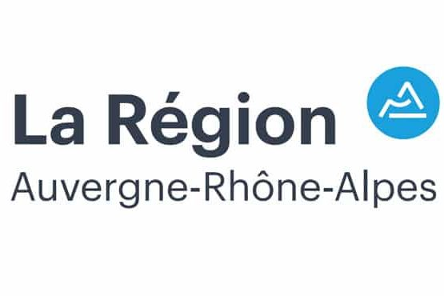
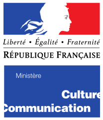
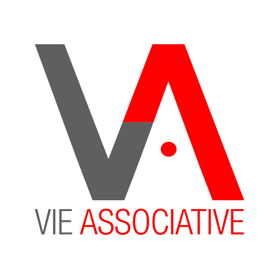

<!DOCTYPE html>

<head>
  <meta charset="UTF-8">
  <link rel="icon" href="logos.gif" />
  <title>Platforme de réservation Danse-Étude</title>
  <meta name="viewport" content="width=device-width, initial-scale=1"><link rel="stylesheet" href="https://cdnjs.cloudflare.com/ajax/libs/normalize/5.0.0/normalize.min.css">
<link rel='stylesheet' href='https://fonts.googleapis.com/css?family=Open+Sans:400,300,700'><link rel="stylesheet" href="./Res_danse_etude.css">

</head>
<body>
<!-- partial:index.partial.html -->
<!--
<div class="card">

	<aside>

		

	</aside>

	<article>

		<h2><span>Bonjour et bienvenue sur la plateforme de Réservation de la section Danse-Étude !</span></h2>
		

		<h3>Choisissez parmis les dates disponibles pour la réprésentation du projet SOEURS : </h3>

		<p class="lien"><span>Réservation pour le jeudi 7 Avril 2022&nbsp;</span><br/><a href="https://docs.google.com/forms/d/e/1FAIpQLSeDwYP9vy7MZB5n7Eicmy1fF15GwKb3WB82JjuqqtIWYBwoNA/viewform?usp=sf_link">Réservation Jeudi</a> </p>
		<p class="lien"><span>Réservation pour le vendredi 8 Avril 2022&nbsp;</span><br/><a href="https://docs.google.com/forms/d/e/1FAIpQLSdGIHktz_lJeOfnGVTje8XVTowHZgs_0308BA6Iy58n_Kk5hA/viewform?usp=sf_link">Réservation Vendredi</a></p>
		<p class="lien"><span>Réservation pour le samedi 9 Avril 2022&nbsp;</span><br/><a href="https://docs.google.com/forms/d/e/1FAIpQLSdFTsWqVXOcfNTNduVj8HluSHIboggM8JuUIcLmarxV0wB1Ag/viewform?usp=sf_link">Réservation Samedi</a></p>
		<p class="lien"><span>Réservation pour le dimanche 10 Avril 2022&nbsp;</span><br/><a href="https://docs.google.com/forms/d/e/1FAIpQLSc8AtRugT2yB8Rd_b557sUTzQrveUhGYvLX4FcBy7-UG3B02Q/viewform?usp=sf_link">Réservation Dimanche</a></p>
		
		<p class="infos"> <span>INFORMATION:</span></p>
		<p class="liens">
			<span>HORAIRE :</span> Jeudi 07/04 (à 14h, 16h ou 18h) , Vendredi 08/04 (à 12h30 ou 18h30), Samedi 09/04 (à 11h, 14h, 16h ou 18h), Dimahce 10/04 (à 14h, 16h ou 18h). <br/>
			<span>ADRESSE :</span> La Maison du Citoyens, Quartier Les Buers, VILLEURBANNE , 67 Rue Octavie, 69100 Villeurbanne.<br/>
			<span>TARIF :</span> 5€/Gratuit pour les moins de 6 ans ( payer sur place ) .<br/>
			<span>TENUE ADÉQUATE :</span> Chaussures confortables pour marcher / tenue vestimentaire adaptée à l’extérieur en fonction des conditions météorologiques .<br/>
			<span>INFOS PMR :</span> Un parcours spécifique pour les personnes à mobilité réduite est accessible. Merci de vous rapprocher de la billetterie de la Maison de la Danse.<br/>
			<span>INFO COMPLÉMENTAIRE :</span> La jauge est limitée à 60 personnes par session de représentation.<br/>
			
		</p>
		
		
		<p class="infos"><span>DESCRIPTIONS:</span></p>
		
		<p class="descriptions">
			<span>« SOEURS »</span><l class="complement"> sous la direction de Julie des PRAIRIES - Cie. COMPAGNIE DES PRAIRIES </l><br/>
			Durée 1h15  <br/><br/>
			Julie Desprairies occupe une place singulière dans le paysage chorégraphique actuel, développant des projets d’envergure en prise avec un quartier, une ville, un bâtiment, un paysage et ses habitants. Son objectif est de rendre visible le mouvement de ces lieux au travers de spectacles, performances, vidéos et expositions. Invitée par la section Danse-études de l’INSA Lyon qui fêtera ses trente ans en 2022, elle crée Sœurs, un projet chorégraphique atypique autour d’un site en chantier, le Terrain des sœurs, dans le quartier des Buers à Villeurbanne — capitale française de la culture en 2022. Prenant la forme d’un parcours déambulatoire, élaboré avec les étudiants-ingénieurs de l’INSA, les habitants et des partenaires (architectes, bailleurs sociaux, associations…), tous impliqués dans la conception de ce nouveau quartier, ce projet questionne la transformation urbaine par l’exploration physique des espaces et la mise en jeu des corps, abordant les enjeux de la ville de demain — mixité sociale, variété d’usages, biodiversité. Partenaire de l’INSA de Lyon, la Maison de la Danse soutient ce projet et propose au public des médiations, rencontres, conférences, ainsi qu’une exposition virtuelle sur Numeridanse autour du travail de Julie Desprairies. L’occasion de découvrir la démarche unique d’une chorégraphe engagée qui transforme l’art chorégraphique en un espace de concertation citoyenne !
		</p>
		
		
		<h4></h4>
		
		<p class="contact">
			<span>CONTACT :</span><l class="complement"> tom.poupard@insa-lyon.fr, contacter si désistement.</l><br/><br/> 
		</p>
		
		
		
		
		
		
		
		
		
		
		
	</article>

</div> -->
<!-- partial -->
  
</body>
</html>
